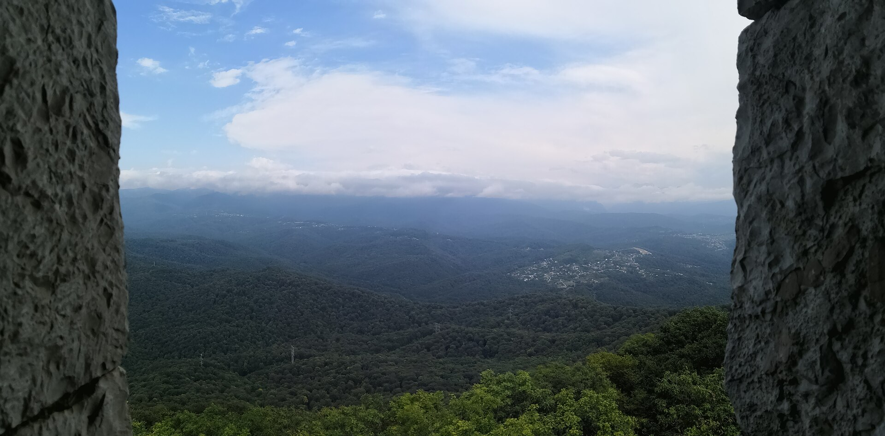
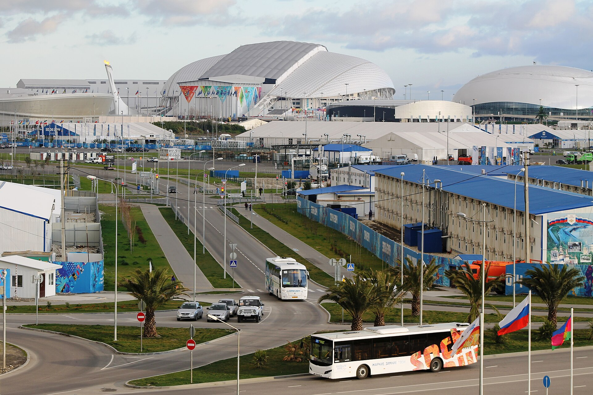

03 / СОЧИ
Сочи за окнами
автомобиля
Море, горы и природные маршруты. Выбираем места, которые хочется увидеть, и оставляем время для остановок.
СХЕМА ПУТЕШЕСТВИЯ
Выбирайте настроение дня
Это схема направлений, не навигационная карта. Точки и дорогу между ними согласуем под сезон и погоду.

02 / МАРШРУТПриродаАхун, Агура и водопадыОткрыть маршрут
03 / МАРШРУТПобережьеСириус и город у моряОткрыть маршрутНа карточках: художественный образ гор; фото Ахун, Лилия Гимбицкая, CC BY 4.0; фото Олимпийского парка 2014 года, Сергей Казанцев, CC BY-SA 3.0. Полные ссылки на авторов есть на страницах маршрутов.
ПОЕЗДКА ПОД ВАШИ ДАТЫ
Маршрут зависит от ваших гостей
Можно выбрать один выезд или оставить несколько свободных дней. Уточним погоду, доступность мест и удобный транспорт.
Собрать маршрут